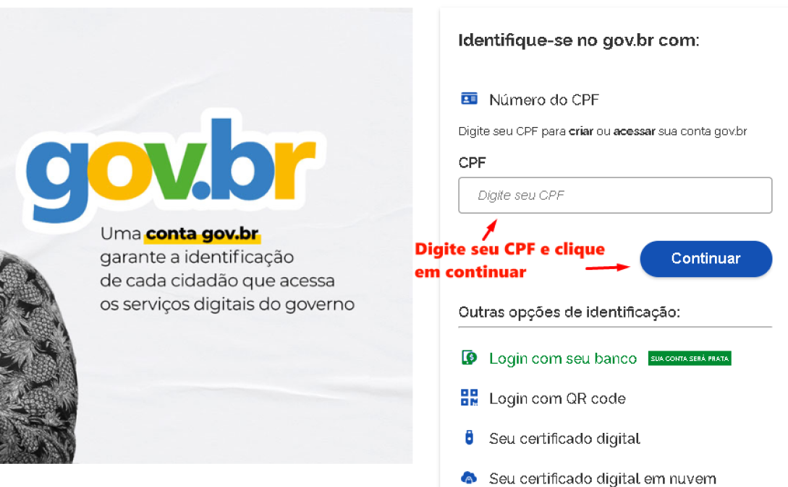
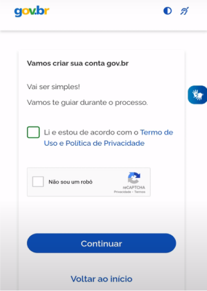
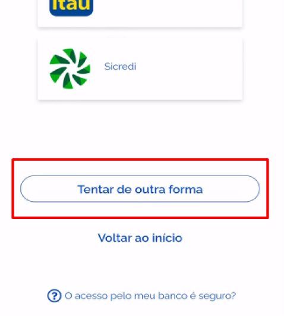
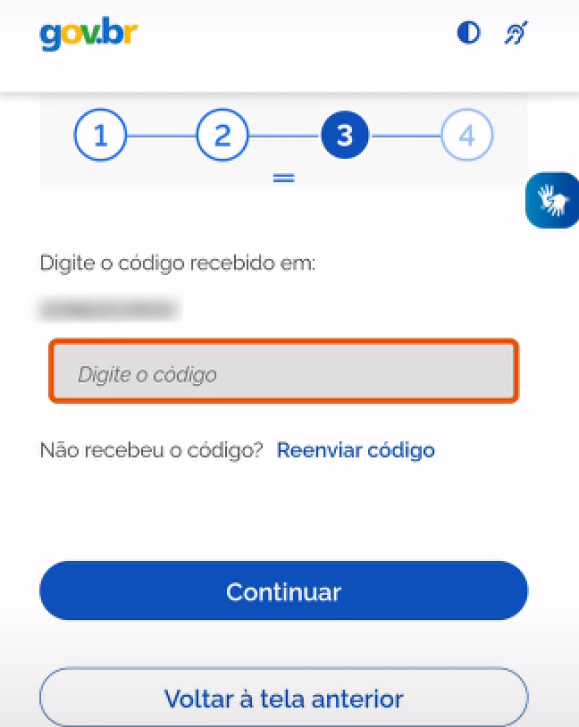
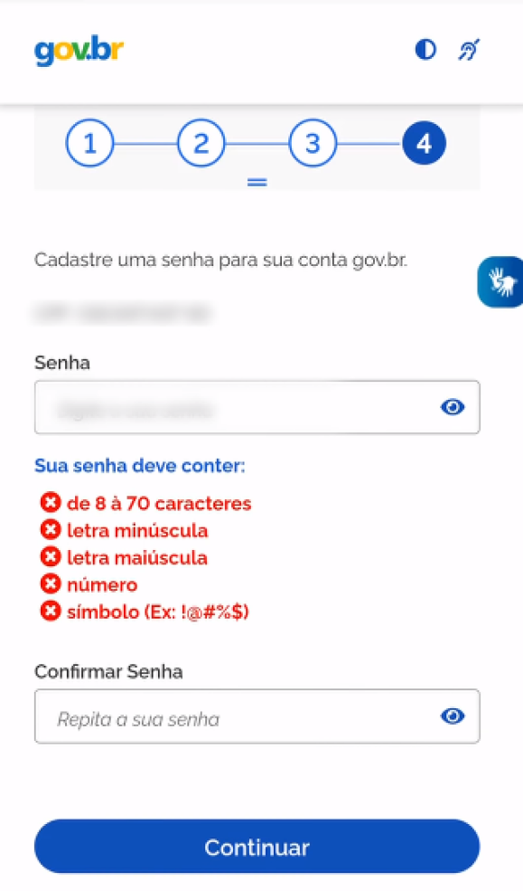

Como criar minha conta na
Basta seguir os passos abaixo:
Acesse o site da gov.br

Após inserir o CPF, caso não tenha a conta já criada, essa sera a próxima tela.
Marque que esta de acordo com o Termo de Uso e Política de Privacidade.
Marque a caixa Sou humano que irá lhe direcionar à um rápido teste de verificação.
Após ter todas as opções marcadas, clique em Continuar para prosseguir.
- Após prosseguir, você tem a opção de criar sua conta através do Banco.
- Porém prosseguiremos com a criação da conta através do CPF.
- Assim, arraste a tela até embaixo, e clique em Tentar de outra forma.

O site irá confirmar algumas informações pessoais suas, como data de nascimento, CPF e nome completo.
- Após isso, ele lhe enviará um código para ativar sua conta.
- Caso escolha por e-mail, digite seu e-mail, e espere o código aparecer na sua caixa de entrada. Caso não encontre, pode ser que esteja na caixa de spam.
- Caso escolha por telefone, digite seu número de celular, e espere o código aparecer por SMS. Para acessar, procure nas suas Mensagens do seu celular, onde estará a mensagem com o código necessário para prosseguir com o cadastro.

- Com o código em mãos, digite ele na barra em laranja e clique em Continuar.
- Caso não tenha recebido o código, pode reenviar o código e tentar novamente.

- Tendo a conta ativada, está na hora de criar sua senha. Sua senha precisa de pelo menos 8 caracteres, letra minúscula, maiúscula, número e algum símbolo.
- Depois, apenas repita a sua senha para confirmar, clique em Continuar e pronto!
- Sua conta está criada!

O site irá te direcionar para a página de log-in, onde você terá que colocar seu CPF e sua Senha.
Após isso, está feito!
Sua conta está criada!
Porém para Solicitar a criação de uma MEI, você precisa no mínimo que sua conta esteja em nível PRATA!
- Este é o Nível Inicial da Conta GOV.BR
- Validação dos dados pessoais via internet banking de um banco credenciado.
- Validação dos dados com usuário e senha do SIGEPE, se o cidadão for servidor público federal.
- Validação facial pelo aplicativo gov.br para conferência da sua foto nas bases da Carteira de Habilitação (CNH).
- Validação dos seus dados com Certificado Digital compatível com ICP-Brasil.
- Validação facial pelo aplicativo gov.br para conferência da sua foto nas bases da Justiça Eleitoral.